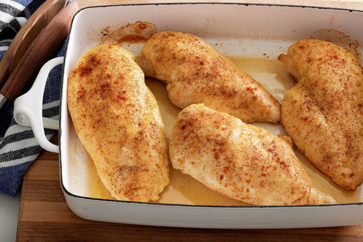

Chicken Breasts

Make this top-rated recipe with just five ingredients!
Ingredients
- Chicken Breasts
- Olive Oil
- Salt
- Creole Seasoning
- Chicken Broth
Steps
- Season Chicken - Coat the chicken breasts with olive oil, then sprinkle both sides with salt and Creole seasoning.
- Bake Chicken - Place the seasoned chicken in a broiler pan
- Finish With Pan Sauce - Pour the chicken broth into the pan you used to bake the chicken